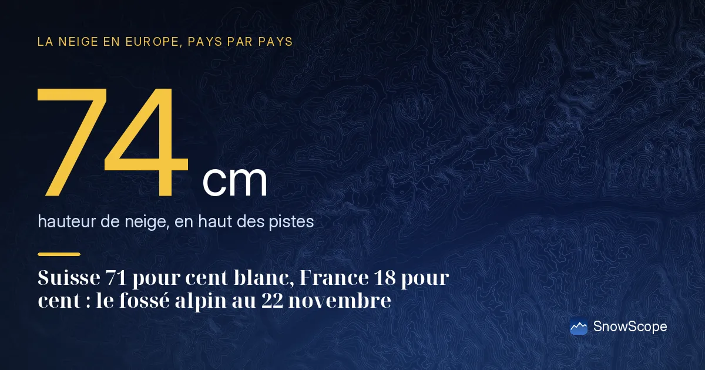

Suisse 71 pour cent blanc, France 18 pour cent : le fossé alpin au 22 novembre
Les montagnes suisses sont vastement plus blanches que celles de France le même jour : 71 pour cent de couverture neigeuse contre 18 pour cent. Cet écart reflète la façon dont les tempêtes récentes ont traité les deux pays différemment, les stations suisses conservant nettement plus d'eau sous forme de neige fraîche.
Consultez les prévisions neige en temps réel pour Glacier 3000 sur l'application SnowScopeHauteurs de neige, alertes poudreuse et carte 3D, gratuitement.
Pourquoi la Suisse est tellement plus blanche
La différence est frappante. Le 22 novembre, SnowScope montre la Suisse avec de la neige sur 71 pour cent de la zone cartographiée, tandis que la France se situe à seulement 18 pour cent. Ce n'est pas du hasard. Les tempêtes atlantiques qui ont traversé les Alpes au cours de la semaine passée ont déposé beaucoup plus de neige sur le versant suisse, notamment dans les Alpes du Valais et l'Oberland bernois.
La raison tient en partie à la géographie et en partie au calendrier. Les montagnes suisses interceptent l'humidité en premier ; les versants français font souvent face à un air plus sec. Au cours des 72 dernières heures, les Alpes du Valais ont reçu 166 cm de neige—une recharge spectaculaire pour une chaîne de montagnes. L'Oberland bernois a connu 112 cm. Le leader français, La Grave, a enregistré 171 cm sur la même période, mais c'est un point, pas une région. Sur l'ensemble de la France, la couverture blanche reste fragmentaire et faible.
D'un point de vue hydrologiste, cela compte. La neige est de l'eau stockée. La Suisse constitue un réservoir hivernal bien plus rapidement que la France début novembre. Cette eau alimentera les fleuves et les réservoirs à travers le printemps et l'été.
| Pays | Blanc | Station la plus enneigée | 7 prochains jours |
|---|---|---|---|
| Suisse | 71 % | Glacier 3000 | 49 cm |
| Autriche | 60 % | Stubaier Gletscher | 25 cm |
| France | 18 % | La Grave | 38 cm |

Voisins : des débuts contrastés
L'Autriche, voisine orientale de la Suisse, se situe entre les deux extrêmes avec 60 pour cent de couverture blanche. Son leader, Stubaier Gletscher, affiche 67 cm de neige fraîche en 72 heures—solide mais en retrait par rapport aux meilleures stations suisses. L'Autriche fait face à moins de tempêtes entrantes dans les 7 prochains jours (25 cm prévus) comparé aux 49 cm de la Suisse et aux 38 cm de la France.
La France est l'histoire du potentiel sans encore assez de profondeur. La Grave, célèbre pour son terrain abrupt, a capturé 171 cm en trois jours—impressionnant pour une mesure ponctuelle. Mais les Alpes françaises plus larges restent minces. Ce déséquilibre signifie que les skieurs en France cherchent des poches de bonne neige plutôt que de skier dedans partout.

Où l'eau suisse est la plus profonde
Glacier 3000 mène avec 74 cm à son point de mesure et 108 cm de neige fraîche en 72 heures. Son sommet se situe à 2 931 m, assez haut pour conserver ce qu'il a capturé. Zermatt, à 3 872 m, est la station la plus élevée de notre liste ; elle affiche 65 cm mais a accumulé 74 cm en trois jours et bénéficie de l'altitude du glacier où la neige persiste plus longtemps.
Dans les Alpes du Valais dans son ensemble, le manteau neigeux est le plus épais au-dessus de 2 500 m, où SnowScope estime une profondeur moyenne de 34 cm. Même la bande 2 000–2 500 m affiche en moyenne 21 cm. Cette stratification signifie que les montagnes stockent l'eau efficacement en altitude, où elle ne fondra pas rapidement.
Ce qui arrive
Les trois prochains jours ajouteront plus d'eau aux montagnes suisses. Jusqu'à 38 cm sont prévus à travers le pays. Demain, 23 novembre, semble être la journée la plus enneigée avec jusqu'à 28 cm attendus. C'est le premier jour de neige significatif de notre série de prévisions.
Au cours des sept prochains jours, le total prévu atteint 49 cm. Cela poussera la couverture blanche vers le haut et approfondira le manteau neigeux davantage, notamment au-dessus de 1 500 m où la couverture complète est déjà établie. La France verra 38 cm sur la même période—se rattrapant légèrement, mais à partir d'une base bien plus mince.
La tendance : recharge rapide
Il y a une semaine, la Suisse avait de la neige sur seulement 16 800 kilomètres carrés. Aujourd'hui, elle couvre 22 110 kilomètres carrés—une augmentation de 5 310 kilomètres carrés en sept jours. C'est une expansion de 32 pour cent de la zone blanche. La tendance grimpe depuis le 19 novembre, avec de brefs reculs mais une pente clairement ascendante.
Cette vitesse de recharge est typique pour les tempêtes de début de saison dans les Alpes. Les montagnes absorbent l'eau rapidement. Du 16 novembre à aujourd'hui, la zone enneigée a crû de 2 370 kilomètres carrés en seulement 24 heures, montrant la rapidité avec laquelle les conditions peuvent changer quand un air chargé d'humidité s'installe.
L'altitude compte : ligne de neige à 1 100 m
SnowScope place la ligne de neige à 1 100 m aujourd'hui. Cela signifie qu'en dessous de cette altitude, la neige est clairsemée : seulement 16 pour cent de couverture blanche dans la bande 500–1 000 m. Entre 1 000 et 1 500 m, 77 pour cent est blanc, mais la profondeur moyenne n'est que de 4 cm—mince et vulnérable à la fonte ou au vent. Au-dessus de 1 500 m, la couverture complète tient, avec des profondeurs de 15 cm à 34 cm selon l'altitude.
Pour les stations de ski situées en dessous de 1 500 m, la fiabilité en début de saison dépend de l'ombre, de l'altitude et des chutes de neige continues. Les stations au-dessus de 2 000 m construisent une base solide qui perdurera.
Conseils aux skieurs
- Si vous skiez en Suisse, privilégiez les stations au-dessus de 1 500 m où la neige est continue. Glacier 3000 et Zermatt ont la profondeur et l'altitude de leur côté.
- Surveillez les 48 prochaines heures : 28 cm sont prévus pour le 23 novembre. Cela remplira les zones peu profondes et renforcera la base partout.
- En France, recherchez le terrain en haute altitude (La Grave, les secteurs supérieurs de Chamonix) où la neige fraîche s'accumule. Les pentes basses pourraient encore être minces.
- Consultez le bulletin d'avalanche officiel si vous partez hors-piste ; neige fraîche et pentes abruptes sont une combinaison dangereuse.
- Vérifiez l'altitude exacte et l'exposition de votre station avant de partir. Début de saison signifie que l'exposition et l'altitude font la différence entre bonne neige et roche.
À propos de ces chiffres
Les hauteurs de neige des stations sont la neige la plus épaisse sur le haut du domaine à la date indiquée ; ce sont des estimations pour une zone, pas une mesure en un point. Les prévisions peuvent changer. Consultez toujours le bulletin d'avalanche officiel avant le hors-piste.
Citer ce bulletin
Pour la recherche, l'enseignement ou la presse : chiffres et graphiques réutilisables librement sous CC BY 4.0 avec cette citation.
SnowScope (2026), Suisse 71 pour cent blanc, France 18 pour cent : le fossé alpin au 22 novembre, https://snowscope.app/blog/fr/2026/11/switzerland-snow-vs-neighbours-22-november-2026.html, consulté le 2026-11-22
SnowScope (Atlas Labs). (2026, November 22). Suisse 71 pour cent blanc, France 18 pour cent : le fossé alpin au 22 novembre. SnowScope snow reports. https://snowscope.app/blog/fr/2026/11/switzerland-snow-vs-neighbours-22-november-2026.html
BibTeX
@misc{snowscope2026switzerlandsnowvsneighbo,
author = {{SnowScope (Atlas Labs)}},
title = {Suisse 71 pour cent blanc, France 18 pour cent : le fossé alpin au 22 novembre},
year = {2026},
month = nov,
howpublished = {\url{https://snowscope.app/blog/fr/2026/11/switzerland-snow-vs-neighbours-22-november-2026.html}},
note = {Published 2026-11-22 11:38 UTC; accessed 2026-11-22}
}· CC BY 4.0 · Méthodes, données et outils →
Glacier 3000 : neige et température selon l'altitude, cet hiver vs l'hiver dernier (outils) →
Suivre Glacier 3000
Gratuit : un message quand la neige arrive, et la météo chaque matin.